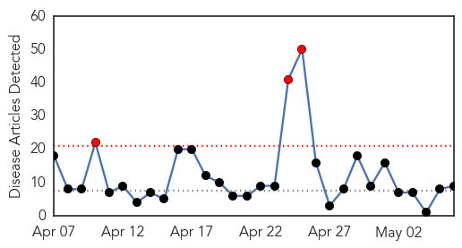
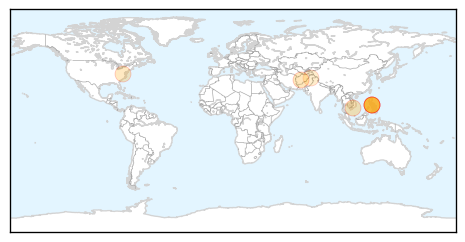
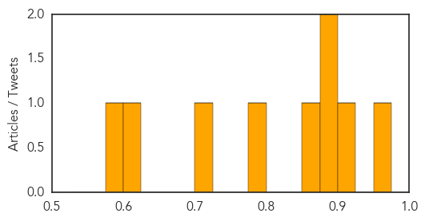
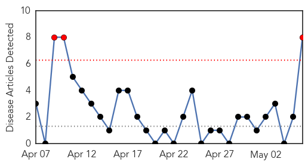
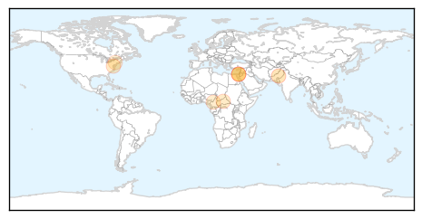

Measles
30-Day Web Trend
3 alerts, 0 warnings

30-Day Twitter Trend
0 alerts, 0 warnings

Article Locations
Article Confidences
Top Articles:
- 0.967
- News, sports, business, jobs - Minot Daily News
- 0.910
- Cornwall Standard Freeholder
- 0.888
- Potential measles exposure in Fairfax, Loudoun counties between April 23 and May 1
- 0.888
- Potential measles exposure in Fairfax, Loudoun counties between April 23 and May 1
- 0.860
- SGGP English Edition- Health teams to monitor hand-foot-mouth prevention efforts
- 0.789
- Lebanese unaware of polio risk, U.N. saysHealthcare
- 0.724
- Some in Fairfax, Loudoun Counties May Have Been Exposed to Measles
- 0.600
- Why polio is making a comeback
- 0.577
- Alberta declares measles outbreak
Top Tweets:
-
No tweets found for May 06, 2014
Hepatitis
30-Day Web Trend
3 alerts, 0 warnings

30-Day Twitter Trend
0 alerts, 0 warnings

Article Locations
Article Confidences

Top Articles:
- 0.831
- Polio emergency declared by World Health Organization
- 0.717
- Spread of polio now a world health emergency
- 0.681
- Potential Hepatitis C exposure at Vancouver hospital
- 0.664
- Polio declared world emergency
- 0.646
- WHO: Spread of polio is global emergency
- 0.585
- Spread of polio now a world health emergency
- 0.576
- UN says spread of polio now a world health emergency
- 0.532
- WHO declares spread of polio an international public health emergency - National
Top Tweets:
-
No tweets found for May 06, 2014